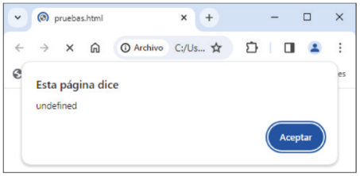
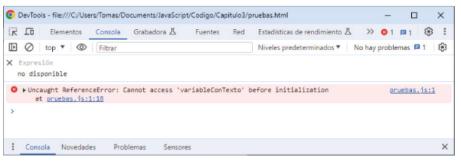
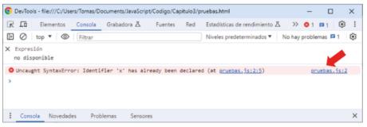
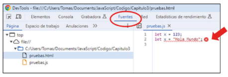

Capítulo 3 - Variables y constantes
Al igual que otros lenguajes de programación orientados a objetos u OOP (Object-Oriented Programming), JavaScript trabaja con variables y constantes, ambas empleadas en el almacenamiento y registro de datos; las variables podrán alterar/modificar su valor a lo largo de la ejecución del programa y las constantes no.
Para hacer uso de estas herramientas deberemos declarar un archivo con extensión ".js" dentro de la misma carpeta que la de la página web, que la del ".html" principal, generalmente con el nombre "index.html". Dentro de este, al igual que declarábamos la llamada al archivo ".css", también lo haremos para el archivo ".js":
Llamada a archivos ".css"
<!DOCTYPE html>
<html lang="es">
<head>
...
<link rel="stylesheet" href="prueba.css">
</head>
<body>
...
</body>
</html>
Llamada a archivos ".js"
<!DOCTYPE html>
<html lang="es">
<head>
...
<script src="prueba.js"></script>
</head>
<body>
...
</body>
</html>
Una variable es un espacio en la memoria donde se guardan/almacenan información, tipo y valor. Su distinción se realiza en base a un identificador propio para cada una, el nombre.
Dichos nombres únicamente pueden estar formados por letras, dígitos o los símbolos dollar ($) y barra baja (_), así como también, el primer carácter no puede ser un dígito. Tampoco pueden ser nombrados por palabras reservadas (let).
De igual forma, nombrar a una variable, aún con el mismo nombre, empezando por mayúscula o minúscula, no será la misma.
En JavaScript la declaración de variables se realiza de la siguiente manera:
let identificador/nombre;
Otra forma de declarar variables es mediante la palabra reservada "var", aunque no es muy
recomendable su uso, pues puede generar problemas en la ejecución del código, además de
estar destinada para navegadores antiguos.
Ejemplo práctico de declaración de variables:
// Formas incorrectas:
let 1suma;
let let;
// Formas correctas:
let suma;
let Suma
let $suma;
let _suma;
Tras declarar la variable, podemos o bien dejarla así o bien asignarle/declararle un valor:
let identificador = valor;
Ejemplo práctico de asignación de valor a una variable:
let Saluso = "¡Hola mundo!";
let nombre = Rodrigo;
let numero = 14;
De igual forma, la declaración de variables puede ser realizada en una única línea:
let Saludo = "¡Hola mundo!", nombre = Rodrigo, numero = 14;
Partiendo del último caso, si la línea quedase muy larga podríamos declararla de la siguiente forma:
let Saludo = "¡Hola mundo!",
nombre = Rodrigo,
numero = 14;
Respecto a la nomenclatura del nombre, usted podrá utilizar la que desee o le sea de mayor conveniencia. No obstante, la nomenclatura o sistema de nombramiento por convención y el más utilizado es el camel case, según dicha sistematizacion, la variable comenzaría por minuscula y las siguientes iniciales de palabra por mayúscula:
let saludoParaTodoElMundo = "¡Hola mundo!";
Su nombre viene dado por las pequeñas variaciones o cambios dados en el nombre de la variable entre las mayúsculas y minusculas, esto a modo de joroba, y por tanto, "camel case" = "caso camello".
Volviendo a la asignación de valores y, dado que no es obligatorio, si quisieramos mostrar el valor de una variable la cúal no ha sido declarada o asiganada a uno, el resultado a mostrar por el navegador sería el siguiente:
let Saludo;
alert.(Saludo);

Puesto que JavaScript es un lenguaje ampliamente permisible, se recomienda encarecidamente el uso de la siguiente directiva como primera línea del archivo:
"use strict";
Esto a fines de que JavaScript active el modo estricto y pase a tener un comportamiento mucho más estricto. De esta forma, no se permitiran casos como la asignación de valores a variables no declaradas y, en general evitará malas prácticas.
Lista completa de todas las implicaciones que importa la directiva "use strict"
Ejemplo práctico sin el uso de la directiva "use strict":
let Saludo;
Saluda = "¡Hola mundo!";
alert.(Saludo);
Si usasemos la directiva "use strict" nos ahorraríamos disgustos, tiempo y energía en encontrar un simple error qué, muchas veces será casi imperceptible para el programador.
Ejemplo práctico con la directiva "use strict":
"use strict";
let Saludo;
Saluda = "¡Hola mundo!";
alert.(Saludo);

Por último, es importante comentar la permisibilidad de JavaScript como lenguaje dinámico. Esto implica que una variable podrá contener un valor independientemente de su tipo y el momento.
let Saludo = "¡Hola mundo!";
Saludo = 14;
Saludo = true;
Saludo = null;
Saludo = undefined;

Por el contrario, lo que no se podrá hacer será declarar la misma variable en más de una ocasión para dos o más valores.
let Saludo = "¡Hola mundo!";
let Saludo = 14;

Respecto a las constantes, estas comparten características y funcionalidades junto a las variables, pues también son espacios de memoria. Sin embargo, lo que las hace diferentes de las variables es su propiedad de ser inmutables, es decir, por su imposibilidad para cambiar o variar el valor original o inicialmente asignado. Haciendo que a diferencia de las variables, los valores de las constantes deban ser asignados al momento de su creación. Su declaración se dará mediante la palabra reservada "const".
const identificador = valor;
Ejemplo práctico erróneo de declaración de constantes:
const numeroEpsilon;
numeroEpsilon = 2.7182;
Ejemplo práctico correcto de declaración de constantes:
const numeroEpsilon = 2.7182;
Así como ya hablamos de la nomenclatura de las variables, las constantes vuelven a doblegarse a la preferencia del programador. No obstante, su nombramiento convencial consta del uso de barra baja (_) entre palabra y el uso constante de mayúsculas:
const NUMERO_EPSILON = 2.7182;
De vuelta a la asiganción de valores, al igual que en las variables, las constantes no permiten ser declaradas en más de una ocasión para dos o más valores:
const numeroEpsilon = 2.71;
const numeroEpsilon = 2.7182;